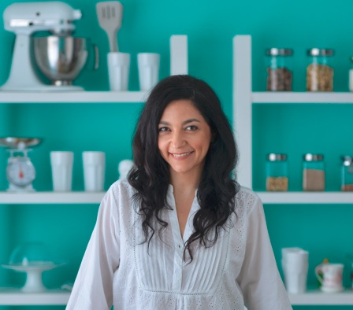

Gracias por compartir este espacio que creamos con el fin de transmitir todo aquello que nos impulsa a construir una MEJOR CALIDAD DE VIDA. Pensamos que una LONGEVIDAD SALUDABLE es posible!
Nosotras somos tres hermanas con raíces familiares super italianas, unidas por el Amor y las ganas de hacer cosas que nos hacen bien!
Desde hace un tiempo estoy realizando cambios y con Virna, nutricionista y quien introdujo a la familia la alimentación keto/lowcarb y junto con mi otra hermana, Mariela, se sumaron las prácticas de cuidado consciente desde el bienestar físico, mental y emocional.
Ellas me alentaron para comenzar con algo que he soñado siempre, unir mis dos pasiones: la cocina y la docencia y así comencé a dar labs de cocina, las redes sociales y The Keto Lab.

Virna Calabro:
Lic en Nutrición UBA / Practitioner PNL
Inmunonutrición
Salud Digestiva
Nutrición Funcional
Te acompaño a crear nuevos hábitos
Instagram Nutrición integralcareMariela Calabro:
Modo BienEstar
Instructora de Yoga y Taichi
Terapeuta Holística
Practitioner en PNL.
Instragram Mariela Calabro